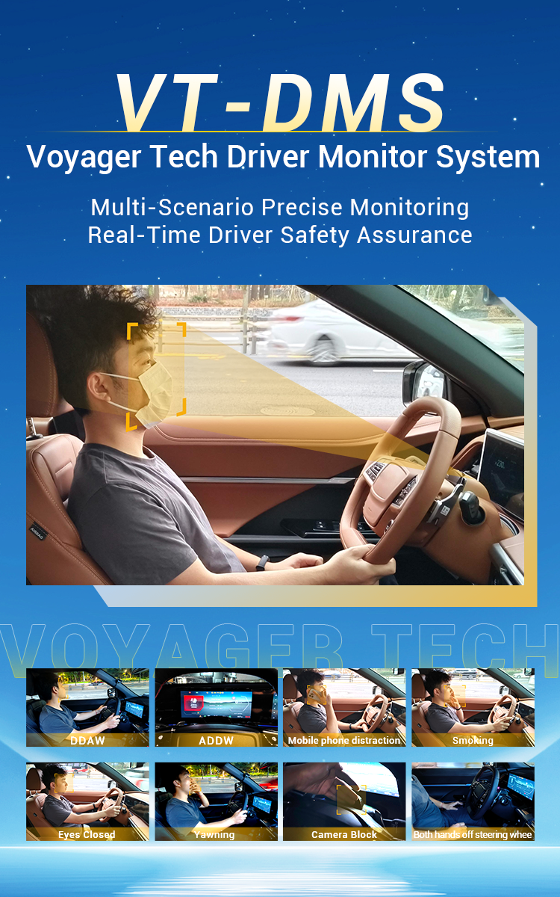

VT-DMS has recently obtained the stringent EU GSR 2.0 certification in Spain, complying with the requirements for ADDW, DDAW, and cybersecurity. This achievement underscores our technological strength and global competitiveness in smart assisted driving safety, paving the way for our expansion into European and global markets. With the EU mandating DMS in new vehicles starting July 2024, VT-DMS will play an important role in improving road safety and reducing accidents caused by driver distraction and fatigue.
